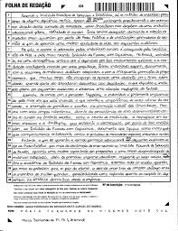
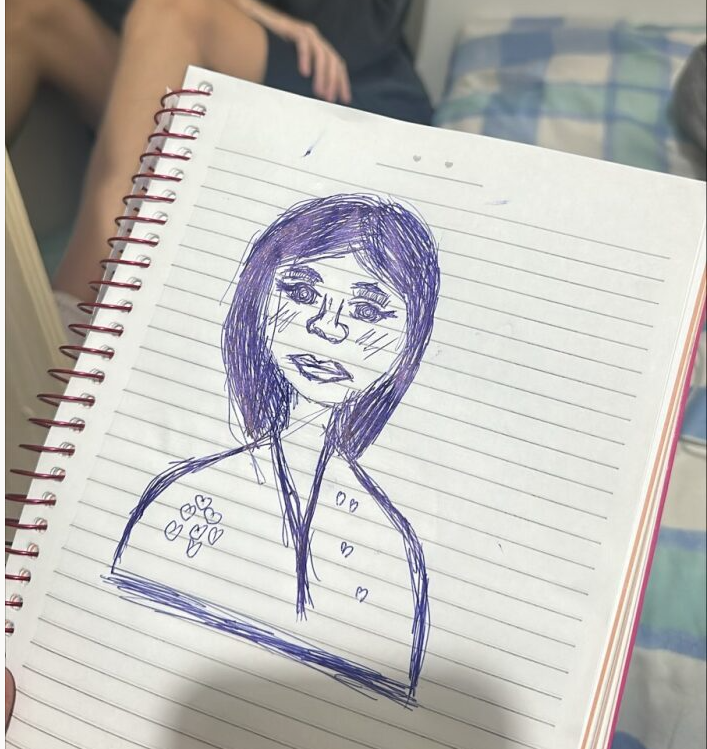

Linguagens
Nem sempre foi fácil. Interpretar textos, entender diferentes gêneros, analisar obras e ainda produzir redações pedindo criatividade e técnica ao mesmo tempo exigiu bastante. Mas, com o tempo, percebi que Linguagens não era só "português da escola": era uma forma de me expressar melhor, entender as pessoas ao meu redor e me comunicar com mais clareza e confiança.
Minha Jornada em Linguagens
1º Ano - Descoberta
No primeiro ano, Linguagens foi a área que me ajudou a me entender melhor. Ainda me adaptando ao ensino médio, era difícil me expressar, falar em público ou interpretar textos mais longos. Mas nesse processo, encontrei minha própria voz: aprendi a escrever com mais clareza, a interpretar sentimentos, a analisar textos e a entender que comunicação não é só falar — é sentir, ouvir, interpretar e transmitir.
2º Ano - Aprofundamento
O segundo ano trouxe desafios maiores. Os textos eram mais densos, as análises mais críticas e precisei lidar com obras literárias, redação, interpretação e discursos mais complexos. Apesar da dificuldade, foi nesse ano que percebi o quanto estava evoluindo.
3º Ano - Consolidação
Mesmo com a pressão de vestibular, trabalhos e provas, consegui transformar tudo isso em evolução. Foi o ano em que percebi que Linguagens não é só uma matéria — é parte da minha identidade e da minha forma de ver e me relacionar com o mundo.
Atividades ao Longo dos Anos

Comunicação e Expressão
No primeiro ano, aprendi a me expressar melhor e a entender diferentes tipos de texto. Desenvolvi leitura, escrita e interpretação, descobrindo que comunicação é o que conecta pessoas e sentimentos. Foi a base para tudo que viria depois.

Leitura Crítica e Argumentação
No segundo ano, aprofundei minha leitura e meu olhar crítico. Aprendi a analisar obras, defender ideias, interpretar discursos e escrever de forma mais consciente e estruturada. Foi um ano de evolução intelectual e muita reflexão.

Escrita Matura e Identidade Linguística
No terceiro ano, aperfeiçoei minha escrita e minha capacidade de interpretar o mundo. Aprendi a transformar ideias em textos claros e expressivos, entendendo a linguagem como parte da minha identidade e como ponte para novos caminhos.

Exemplo de um trabalho desenvolvido
A arte e as suas comunicações. De falar mau e de dizer o bem. O mundo das comuniçações traz aspectos diversos e divertidos, pelo movimento corporal e pela fala. Desenho esté representa a cultura passadda de sentenas, a arte.